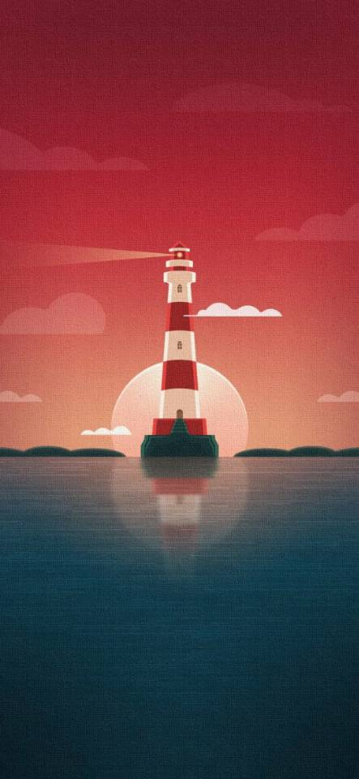

作者名：陈宁舟 发表时间：2020.9.27
我平时喜欢听歌唱歌，喜欢的华语歌手是周杰伦和林俊杰，前几年一直在听EDM，以至于现在EDM新歌枯竭， 每天的日推推的都是我听过的歌。jj的歌对我来说实在是太高了，虽然很喜欢但是很少有能原key唱下来的，因为 喜欢听歌所以买了很多耳机，现役选手是sony的wh-1000xm3和beats的powerbeats pro。
除了听歌唱歌当然少不了玩游戏了，玩了很多游戏。买了台ps4，玩过战神4、血源诅咒、神秘海域4、最后生还者、 地平线。玩来玩去还是觉得没有联机的网游来的好玩，所以现在ps4在我的桌子上吃灰，我不是LOL就是CSGO， fps游戏的天赋有限，所以csgo的段位不是很高，区区黄金仔。相比而言lol玩的更多些，有电一白金水平。
我来自浙江宁波，宁波是一个美丽的沿海城市，说到吃，你也许听过宁波特产的年糕、汤圆，和东海里数不清的海鲜； 说到喝，你可能会知道宁波的阿拉老酒，杨梅烧酒；说到玩，这里有绝美的沙滩，也有幽静的翠竹山林小桥流水，繁华 且整洁的城市也许也会讨得你的欢心，这里也不乏有历史的遗迹，有最为古老的藏书阁天一阁，也有孔夫子庙。欢迎你来 宁波看一看。
作者名：陈宁舟 时间：2020.9.27
以我参加了这么多次比赛的经验，在大学里的比赛只要认真准备了基本都可以拿到奖，所以要踊跃地报名呀，只有 报了名才会有动力去学习，去完成自己的作品
图片1
图片2

图片3
作者名：陈宁舟 发表时间：2020.9.28
这是一个表格
| 表格的第一排1 | 表格的第一排2 | |
| 表格的第二排1 | 表格的第二排2 | |
| 表格的第三排1 | 表格的第三排2 | |
| 总计 | 10000 |